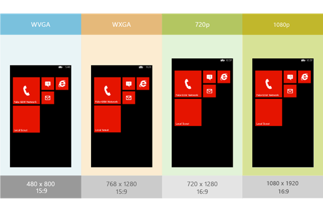

Windows Phone 8支持WVGA、WXGA、720p三种分辨率，这与只支持一种WVGA分辨率的Windows Phone 7.1有很大不同，在Windows Phone 8 Update 3中，还加入了对1080p分辨率的支持，下面介绍了如何对不同分辨率进行适配，以及与其他平台的对比。
一、支持的分辨率
WVGA：分辨率480*800，纵横比：15:9，与Windows Phone 7.1唯一支持的分辨率相同。
WXGA：分辨率768*1280，纵横比15:9，对480*800按照1.6x倍率缩放。
720p：分辨率720*1280，纵横比16:9，对480*853按照1.5倍缩放（对480*800按照1.5倍缩放后在高度上再增加80个像素）
1080p：分辨率1080*1920，纵横比16:9，对480*853按照2.25倍缩放（注意：在系统内部，对于1080p分辨率的屏幕，ScaleFactor属性返回的值仍然与720p相同，是1.5，而不是其实际缩放倍率2.25，系统内部实际上是将各种针对于720p的图片资源应用于1080p分辨率，而不是为1080p分辨率单独准备一套资源）。
下图展示了对于不同分辨率的显示效果。

iPhone与Windows Phone情况类似，支持的分辨率较少，目前主流只有普通屏幕的320*480，Retina屏幕的640*960和1136*640，适配起来也相对容易。但是Android平台由于其特有的开放性，屏幕尺寸和其所支持的分辨率也多种多样，主流分辨率有480*800、480*854、540*960、720*1280、800*1280等，同时，对于Android 4.0以上的系统，有些厂家使用了系统自带的虚拟键盘，这样会占用一定的屏幕高度，这样，对于应用开发者来说，要做很多工作来确保显示给用户的界面不会出现偏差与失真。
二、获取屏幕DPI
DPI即Dots per inch，表示每英寸的点数，也称像素密度。只知道分辨率和屏幕尺寸还不能很好的描述出屏幕的特性，例如，对于同样分辨率、大小分别为4英寸和14英寸的屏幕，他们的DPI显然不同，4英寸屏幕清晰度要远好于14英寸的屏幕。
各开发平台都提供了获取屏幕DPI的接口，Android中利用DisplayMetrics获取DPI，IOS利用UIScreen获取DPI，与这些接口相对应，在windows phone和windows应用商店应用开发中您可是使用DisplayProperties或DisplayInformation，以下详细介绍windows phone和windows平台上获取屏幕DPI的方法。
您可以使用DisplayProperties类的LogicalDpi 属性获取屏幕DPI，该属性为只读属性。该类位于 Windows.Graphics.Display命名空间，只要引入该命名空间，您可以在程序的任何地方获取屏幕DPI。但是DisplayProperties在windows 8.1之后将不再被支持，相代替微软为您提供了DisplayInformation，DisplayInformation不仅提供了获取屏幕DPI LogicalDpi 属性，还提供了RawDpiX和RawDpiY属性以获取沿X轴和Y轴每英寸的点数。所以您最好使用DisplayInformation，以便您的程序能在windows 8.1及更高版本中能够很好的被支持。
更多信息请参见DisplayInformation.、DisplayProperties、获取DPI示例
三、适应您的布局
由于所有的Windows Phone 7.1手机只支持一种分辨率，所以只要你的布局在一台Windows Phone 7.1上展示良好，其在所有的Windows Phone 7.1手机上都会显示良好，你无需考虑每个控件如何伸展和流动。
在Windows Phone 8中，你就需要不得不调整你的控件和UI元素的布局，使其在每个分辨率的宽高比下都会正常显示。由于Windows Phone 8 Update 3支持两种不同的屏幕宽高比：15:9和16:9，对于一种宽高比显示正常的控件可能会在另一种宽高比下出现预料之外的情况。
为了使页面在WVGA、WXGA、720p、1080p的分辨率下正确显示，不要在代码中将控件的高度、宽度和间距写成固定的。在你从工具箱中将空间拖出来后，请将自动添加的间距删除或者仔细进行测试。
你可以使用像Grid control这样的容器来创建自适应的布局，将控件放到grid中，并使用*和Auto来设置行和列的高度和宽度，而不是将控件的高度和宽度固定的写在代码中。这样，应用程序就会拉伸或者收缩来自动适应当前用户手机的高度和宽度。如果你将宽度和高度固定地写在代码中，则布局就不会根据分辨率来自动适配了。
注意：一定要确保你的应用在每一种宽高比（15:9和16:9）下进行测试，对每一种分辨率进行测试并不是严格要求的，除非你为每一种分辨率使用了不同的图片资源。
下面的XAML展示了使用Grid control来实现这些布局的代码。
这个应用对于WVGA、WXGA、720p、1080p具有自适应的动态布局，由于将输出框的Height属性设置成了Auto，它在WVGA和WXGA的手机上具有相同的尺寸，按钮会缩放以适应剩余的空间。在720p和1080p分辨率下，按钮会稍稍高于WVGA和WXGA分辨率上的尺寸。
你可以设置MinHeight和MaxHeight属性来设置最小高度和最大高度，一定要记住，在屏幕上任何方向小于8mm的元素都会无法使用户可靠地按下，你可以使用MinHeight和MinWidth来确保交互控件不会过度缩小。你可以结合使用这些属性来使布局对于WVGA分辨率缩小，但是对于更高的分辨率不会伸展。
在iPhone上的情况
基于IOS SDK 4.0及以后版本的应用程序需要在不同分辨率设备下运行，iPhone以一种简单的方式来支持多分辨率屏幕的情况，大部分处理不同类型屏幕的工作已经由系统框架处理。但应用程序本身也需要做些工作来修正位图图片，如果应用本身要利用像素,也需要做额外的工作。但是由于iPhone设备的规格比较统一，屏幕尺寸和分辨率种类较Windows Phone还要少，且屏幕的宽度完全一致，只是在高度上略有差异，适配起来也更加简单。
iPhone的3.5寸屏幕有普通屏幕320*480和Retina屏幕640*960，这两种分辨率恰好长宽均为2倍，iPhone中规定，对于普通屏幕，一个像素对应一个“点”，对于Retina屏幕，两个像素对应一个“点”，所以这两种屏幕都是320*480个点，另外还有iPhone5系列的640*1136，转换成点就是320*568，所以只需考虑在高度上的适配即可。一般情况下，只需要在设置控件位置之前，判断一下当前的self.view的高度，即可按需安排控件的位置。
在Android上的情况
Android程序的分辨率种类和像素密度多种多样，对于应用程序，Android系统对于各种设备提供了一致的开发环境并完成了大部分适配用户界面的工作，同时，系统也提供了一些API来让你针对特定分辨率和像素密度来控制应用程序的用户界面。在安排Android应用程序的布局之前，首先要了解以下的概念：
屏幕尺寸：屏幕的物理尺寸，通过屏幕的对角线来衡量，为了简单起见，Android将屏幕尺寸分成了四个广义的尺寸：小、正常、大、特大。
屏幕密度：屏幕物理区域内的像素量，通常指的是DPI（每英寸点数），例如，一个低密度屏幕与正常密度或者高密度的屏幕相比，在给定区域内具有较少的点数。为了简单起见，Android将屏幕密度分成了四个广义密度：低、中、高和超高。
方向：从用户的视角看到的屏幕的方向：横向或者纵向。也就是说屏幕的宽高比是宽的或者是高的。
分辨率：屏幕上的物理像素总数，当添加对多屏幕的支持时，应用程序并不直接与分辨率打交道，而是应该关心屏幕尺寸和像素密度。
密度独立的像素（dp）：当你定义UI布局的时候应该使用的虚拟像素单元，以一种密度无关的方式来表达布局。
从Android1.6开始，就已经提供了对多种屏幕尺寸和密度的支持，你可以利用系统的这种特性来优化你的应用程序，使其不仅能正确显示，还能够为使用者在每一种屏幕上提供最佳的用户体验。在为不同的屏幕设计UI时，设定一个基准，比如以480*800、密度为1.5定为hdpi base，以720*1280、密度为2.0定为xhdpi base。如此设置，其他相同密度值的分辨率，都会比这些基准略大，屏幕变大之后的布局调整要比变小的调整要容易的多，在需要调整的地方进行判断，并调整空间的LayoutParams即可。
四、与分辨率相关的背景图像和资源
图像、视频、音频和图标这样的资源占据了一个应用的很大部分，将对应所有分辨率的资源都包含在你的应用中会消耗应用中的许多空间，对于大多数应用，我们建议只包含WXGA的资源，WXGA的资源质量很高，并且对其他分辨率自适应尺寸也比较好。
由于WXGA/WVGA和720p/1080p分辨率有着不同的宽高比，在一些情况下可能需要在应用中包含针对不同分辨率的独特图像。当你想要为你的应用程序添加针对所有分辨率的支持时，可以使用下边的步骤检测设备的分辨率然后在运行时载入相关图片。
在运行时载入与分辨率相关的图片
在你的工程中，添加针对WVGA、WXGA、720p分辨率的图片，本例中，我们将其命名为MyImage.screen-wvga.png、MyImage.screen-wxga.png和MyImage.screen-720p.png。
将图片的Copy to Output Directory属性设置为copy always。
在你的工程中添加一个名为ResolutionHelper.cs的类，并将下属代码复制并粘贴到其中。
public enum Resolutions { WVGA, WXGA, HD };
public static class ResolutionHelper
{
private static bool IsWvga
{
get
{
return App.Current.Host.Content.ScaleFactor == 100;
}
}
private static bool IsWxga
{
get
{
return App.Current.Host.Content.ScaleFactor == 160;
}
}
private static bool IsHD
{
get
{
return App.Current.Host.Content.ScaleFactor == 150;
}
}
public static Resolutions CurrentResolution
{
get
{
if (IsWvga) return Resolutions.WVGA;
else if (IsWxga) return Resolutions.WXGA;
else if (IsHD) return Resolutions.HD;
else throw new InvalidOperationException("Unknown resolution");
}
}
}上面的类中使用ScaleFactor属性来确定设备的分辨率。
添加一个名为MultiResImageChooser.cs的类，并在其中包含下属代码。这个类使用前面创建的ResolutionHelper.cs类来确定设备的分辨率，并针对检测到的分辨率，根据相关的图片URI创建一个新的BitmapImage并返回。
using System.Windows.Media.Imaging;
public class MultiResImageChooserUri
{
public Uri BestImage
{
get
{
switch (ResolutionHelper.CurrentResolution)
{
case Resolutions.HD:
return new Uri("MyImage.screen-720p.jpg", UriKind.Relative);
case Resolutions.WXGA:
return new Uri("MyImage.screen-wxga.jpg", UriKind.Relative);
case Resolutions.WVGA:
return new Uri("MyImage.screen-wvga.jpg", UriKind.Relative);
default:
throw new InvalidOperationException("Unknown resolution type");
}
}
}
}在MainPage.xaml中，添加一个Image元素并将它的Source属性绑定到MultiResImageChooser.cs类的返回值上。
完成上述步骤之后，系统会自动适配对应分辨率的图像资源，对于720p和1080p的分辨率，系统仍然使用的是同一套资源，自动按比例进行缩放。
在iPhone上的情况
在iPhone上为不同分辨率提供特定图片资源可以有如下几种方式：在应用程序中为每一种分辨率提供单独的图片、提供高分辨率图片供其缩放、提供矢量内容等。如果不对资源进行自动适配，对于3.5寸普通屏幕和Retina屏幕，由于其宽高比例一致，自动缩放之后不会造成比例失真，对于4寸屏幕，则会有两种选择：1、 拉伸以铺满屏幕（这样会造成比例失真），2、保持比例（两端各留出44个点的高度的黑边）。所以，为了能够完美支持4寸Retina屏幕，最好为其提供对应特定分辨率的图片资源。
在Android上的情况
在Android上面也一样，对于多分辨率，在res目录下，创建drawable-ldpi、drawable-mdpi、drawable-hdpi三个目录，分别存放低分辨率、中分辨率、高分辨率的图片，系统会根据机器的分辨率分别在这几个文件夹中寻找对应的图片。如果不想提供多套图片，则可以只提供最大分辨率的图片，让系统自动执行图片缩放。同时，对于Android系统，有一种创新的格式叫做“9.png”，这是一种可以拉伸却不失真不变形的图片格式，充分利用这种图片，也可以达到很好的效果。
五、启动画面
为了针对所有分辨率显示启动画面，使用名称为SplashScreenImage.jpg分辨率为768*1280的单个文件，手机会自动将其缩放到正确的尺寸。
如果想要对所有分辨率提供像素完善的启动画面，你可以以下面的名称来添加图片。
SplashScreenImage.Screen-WVGA.jpg
SplashScreenImage.Screen-WXGA.jpg
SplashScreenImage.Screen-720p.jpg
Windows Phone 8 Update 3将会默认在1080p的手机上使用720p的启动画面。
所有的启动画面图片文件必须在应用程序工程的根目录下。
更多信息，可以查看如何为Windows Phone创建启动画面。
在iPhone上的情况
对iPhone设置启动画面，如果普通分辨率的资源名称为：Default.png，则其Retina屏幕对应图片应该是Default@2x.png，4英寸屏幕对应的图片应该是Default-568h@2x.png。
在Android上的情况
在Android上，启动画面是作为一层布局写入到程序中的，载入启动画面的方法与载入背景图片的方法一致，可以只提供一张图片供系统自动缩放，也可以提供多套资源供不同的分辨率使用，这里同样推荐使用“9.png”图片格式，以达到只提供一张图片，且缩放情况下也不会发生失真的目的。
六、磁贴和应用程序图标
对于磁贴和应用程序图标，你必须只添加针对WXGA分辨率的图片，手机会针对WVGA、720p和1080p的屏幕自动将图片缩放到正确的尺寸。更多关于磁贴以及其尺寸的信息，请参见Windows Phone的磁贴。
在iPhone上的情况
在iPhone中，默认情况下可以只提供一张57*57的图片Icon.png作为应用程序图标，同时提供一张29*29的图片Icon-settings.png作为设置区域通用的图标。以上图标在Retina屏幕上会自动缩放适应，为了提供高分辨率的屏幕，可以提供114*114的图片Icon@2x.png和Icon-settings@2x.png的图片。
在Android上的情况
在Android设备上，由于分辨率众多，应用程序的图标也要针对每种分辨率进行设计，通常情况下，需要有36*36的LDPI图标、48*48的MDPI图标、72*72的HDPI图标、96*96的XHDPI图标，这些图标分别放在drawable-ldpi、drawable-mdpi、drawable-hdpi和drawable-xhdpi文件夹中，这样即可适应不同分辨率的手机。
在Android中，主要以密度独立像素（dp）来进行描述，以dp来描述的启动图标为48*48dp，通知栏上的图标大小为24*24dp。